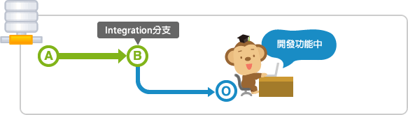
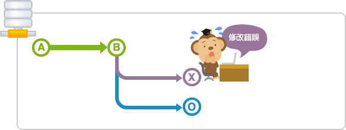
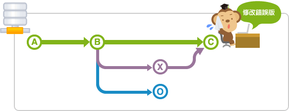
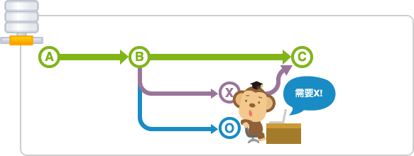
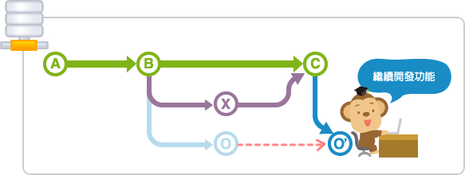

分支
Topic分支和integration分支的運用實例
我們來用簡單的實例講解關於topic分支和integration分支的操作方法。
例如，在開發功能的topic分支操作的途中，需要進行錯誤的修改。

這時，integration分支還是處於開發功能之前的狀態。在這裡新建修改錯誤用的topic分支，就可以從開發功能的作業獨立出來，以便開始新的操作。

完成修復錯誤工作後，藉著將分支導入到原本的integration分支後就可以發佈。

回到原本的分支繼續進行開發功能的操作。

但是，要繼續進行操作，你會發現如果需要之前錯誤修復內容和提交 X 的內容，就要導入提交 X 的內容，有直接 merge 的方法和 rebase 導入提交 X 的合併分支的方法。
下圖表示使用 rebase 合併分支的方法。

在導入提交 X 的內容的狀態下繼續進行開發功能。
只要有效地運用分支，您就可以同時進行不同的作業了呦。
專欄「A successful Git branching model」
我們強烈建議您閱讀「A successful Git branching model」一文。它列出了現在最常用來管理Git分支的方法。
A successful Git branching model 英文原文網址:
http://nvie.com/posts/a-successful-git-branching-model/
根據文章的建議，我們將分支分為四種類型，每個都有不同的角色。
- Main分支
- Feature分支 （亦可稱Topic分支）
- Release分支
- Hot fix分支
分別使用四個種類的分支來進行開發。

Main分支
主要分支有兩種： master 分支和 develop 分支。
- Master
Master 分支只負責管理發布的狀態。當準備好發佈指定版本時，最後的提交會給予一個發布版本標籤。 - Develop
Develop 分支是針對日常開發的分支。所有新功能開發最終都會合併到這裡，類似剛才已經講解過的integration分支的功用。
Feature分支
Feature分支就是在前面講解過的topic分支的功用。
這個分支是新功能的開發或修復錯誤的時候從 develop 分支分開出來的。Feature分支的操作基本上不需要共享，所以不需要在遠端數據庫建立分支，當完成開發後，合併回 develop 分支後發布。
Release分支
Release分支是為了發布而準備的。通常這種分支的名稱最前面會加上"release-" 。
一般的開發是在 develop 分支上進行，到了快要可以發布的狀態時才會建立release分支，release分支主要是做發布前最後錯誤修復所建立的分支。 成員可以在這個分支裡進行最後的調整，而其他成員依舊可以在 develop 分支上進行功能開發，不會相互干擾而影響最後發布。
到了可以發布的狀態時，請將release分支合併到 master 分支，並在合併提交裡添加release版本號標籤。
最好將release分支所作的修改合併到 develop 分支，以確保 develop 分支和master 分支同步到release分支的最新錯誤修復/變更。
Hot fix分支
Hot fix分支是在發布的產品需要緊急修改時，從 master 分支建立的分支。通常會在分支名稱的最前面會加上"hotfix-"。
例如，在 develop 分支上的開發還不完整，需要緊急修改，這個時候在 develop 分支建立可以發布的版本要花許多的時間，所以最好從 master 分支直接建立分支進行修改，然後再合併分支。
請注意，修改時建立的hot fix分支，也要合併回 develop 分支喔。